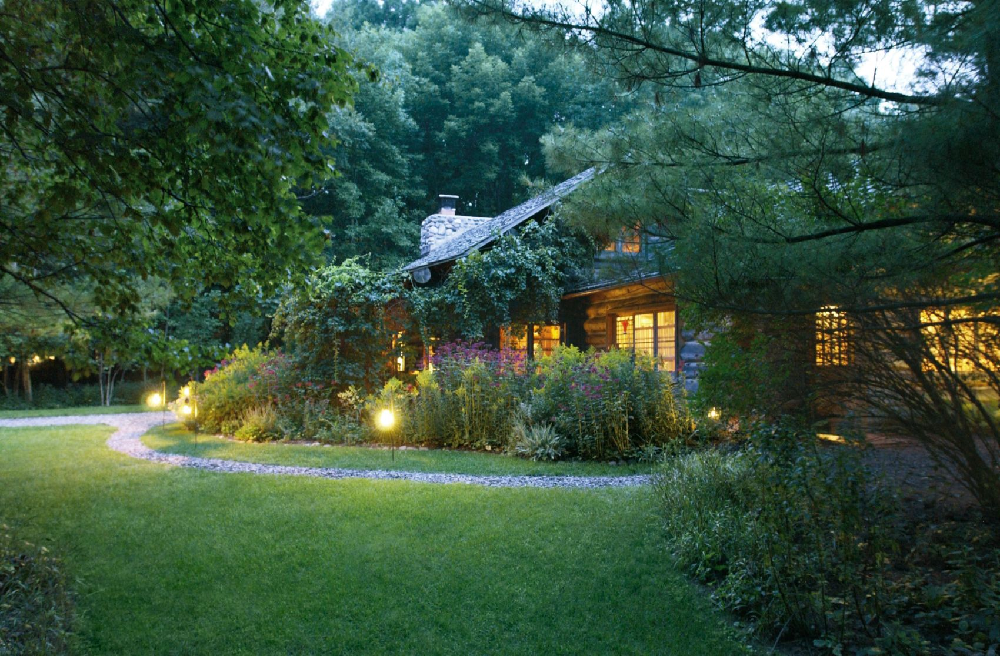

FACILITIES
Welcome to Amuay Wildlife Park, a premier destination for wildlife enthusiasts and families alike! Renowned as one of the most sought-after tourist attractions in Venezuela, our park has garnered numerous accolades, including being awarded the prestigious title of 'Best Wildlife Experience' in the region. Consistently recognized as the ultimate family day out, Amuay Wildlife Park has been celebrated for its exceptional offerings, earning the coveted titles of 'Best Family Day Out' in our province and country. Additionally, we're honored to have been ranked among the Top 25 Zoos and Animal Parks in South America by discerning travelers in the TripAdvisor Travellers' Choice Awards. Join us on a journey of exploration and discovery as we invite you to experience the magic of wildlife in its natural habitat. With thrilling encounters, immersive exhibits, and educational experiences, Amuay Wildlife Park promises an unforgettable adventure for visitors of all ages. Come and be a part of our legacy of excellence in wildlife conservation and family entertainment!
Transport And Parking Information
At Amuay Wildlife Park, we strive to provide convenient transportation options for our visitors to ensure a seamless and enjoyable experience. If you opt to travel by car, parking facilities are available onsite for your convenience. Please note that the parking fee includes access to additional attractions such as our serene garden landscapes and arboretum. Rest assured that the proceeds from the parking fee contribute to the preservation and maintenance of Amuay Wildlife Park and its surrounding areas. As stewards of conservation, we are committed to the upkeep of our natural heritage. For those preferring public transportation, Amuay Wildlife Park is conveniently located near a railway station. Our station gate entrance provides easy access for visitors arriving by train, offering a hassle-free alternative to car travel. Embracing sustainable practices, we encourage eco-conscious commuting options to reduce our environmental footprint. Whether you arrive by car or train, we look forward to welcoming you to Amuay Wildlife Park for an unforgettable journey into the wonders of nature and wildlife conservation.
Wild Dining
 Embark on a culinary journey amidst the wildlife at Amuay Wildlife Park! Start your day with a visit to our Serengeti Café, nestled by the main entrance and offering panoramic views of the park's stunning landscapes. Enjoy a variety of snacks, refreshing beverages, and delightful sandwiches as you watch the majestic animals roam nearby. For those craving a heartier meal, venture to our Jungle Bistro located at the opposite end of the park. Indulge in an array of savory dishes, including mouthwatering burgers, crispy fries, and delectable nuggets, perfect for replenishing your energy after a day of exploration. Take advantage of our expansive Picnic & Rest area, complete with ample seating, shaded spots, and a charming gazebo for a relaxed dining experience amidst nature's beauty. Please note that high-chair loan services are not available for outdoor dining at this time. The Jungle Bistro operates daily, ensuring that you can satisfy your hunger cravings whenever you visit.Join us for a wild dining experience like no other at Amuay Wildlife Park!
Shopping
Immerse yourself in a world of treasures at our Wildlife Emporium, where you'll find a diverse selection of souvenirs, gifts, and essentials to commemorate your visit. From plush toys featuring your favorite animals to locally crafted artwork and eco-friendly merchandise, there's something for everyone to discover. Don't miss the opportunity to take home a piece of the wild and support conservation efforts with every purchase.
Educational Activities
At Amuay Wildlife Park, our Education Department is dedicated to cultivating children's appreciation for nature and wildlife through immersive tours and engaging activities. Our mission centers on promoting biodiversity and conservation, with educational experiences designed to inspire young minds and nurture environmental responsibility.Led by experienced guides, our educational tours offer hands-on exploration of Venezuela's diverse ecosystems, emphasizing the significance of wildlife conservation. Children discover the delicate balance of nature as they observe fascinating flora and fauna firsthand.Complementing our tours, our Little Explorers program introduces young children to the wonders of the natural world through nature walks, arts and crafts, and conservation-themed games. For those passionate about conservation, our Junior Ranger program provides opportunities to participate in habitat restoration projects and interact with animal ambassadors, fostering practical skills and a sense of stewardship. We believe that education is vital for a sustainable future, and by providing memorable learning experiences in nature, we aim to inspire the next generation of environmental leaders. Join us at Amuay Wildlife Park for an unforgettable adventure where learning and fun converge amidst Venezuela's breathtaking landscapes!